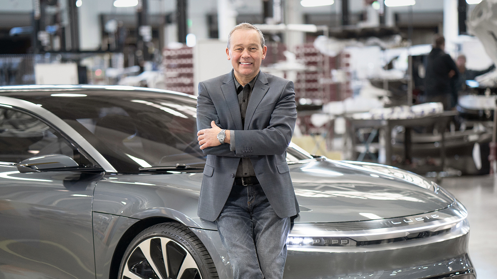

Home
About me
About Lucid
Experience the best
We built Lucid Air to achieve benchmark-setting range without compromising any of the high performance that makes it an extraordinary driver’s car.¹

About the owner
Lucid's CEO and CTO, Peter Rawlinson, formerly served as VP of Engineering and Chief Engineer of the Model S at Tesla,Inc, and Vice President Derek Jenkins previously worked as Head of Design at Mazda North American Operations. The company has seen investments from Tsing Capital, Mitsui, Venrock, JAFCO, and others.